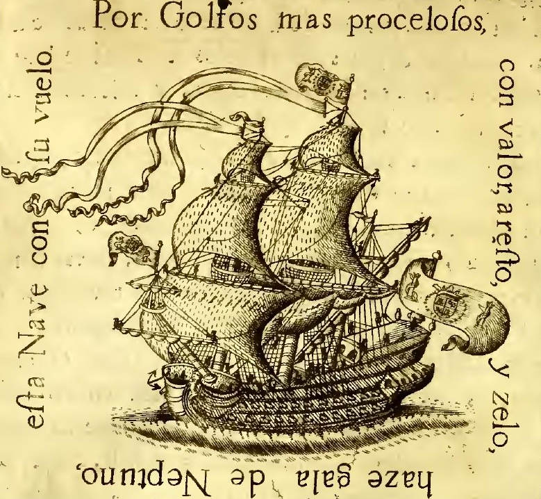

Atlantic Passage and the Potosí Commission (1718–c.1720)
Voyage of the San CristóforoCapuchino’s first transatlantic commission commenced in 1718 with his embarkation aboard the San Cristóforo, a relatively small, 28-gun galleon assigned to convoy service between Cádiz and the Viceroyalty of Peru. The voyage, intended as a routine administrative transfer, acquired later notoriety within family records for the severity of the young financier’s illness and the improbability of his survival. Among his fellow passengers was José Antonio de Mendoza, who would later obtain the Viceroyalty of Peru. Surviving correspondence suggests that the two men formed an early professional familiarity, grounded in shared administrative duties and linguistic aptitude. This association endured for decades, with intermittent references indicating continued communication until Mendoza’s death in the 1740s.
Illness at Sea
During the Atlantic crossing, Capuchino fell gravely ill, reportedly after consuming spoiled fruit—later described in embellished accounts as a pomegranate “infested with worms.” The precise nature of the illness is uncertain; retrospective descriptions suggest symptoms consistent with typhus or a severe gastrointestinal infection. The ship’s captain, Juan de Córdova Lasso de la Vega y Puente, recorded in the vessel’s log that Capuchino’s condition deteriorated to such an extent that his survival was considered unlikely. The entry—preserved in partial transcription—characterizes his recovery as “nothing short of providential,” noting prolonged delirium, fever, and physical exhaustion.
Convalescence in Lima
Upon arrival at Lima, Capuchino was immediately transferred—still incapacitated—to an administrative residence attached to the viceregal government. There he remained bedridden for approximately one month, removed from official duties and under the supervision of colonial attendants. It was during this period of enforced inactivity that Capuchino first encountered the local preparation of coffee. Though coffee had already entered European markets, its colonial cultivation and preparation methods varied significantly. In Lima, beans sourced from interior regions—likely transported through labor networks tied to the mining economy of Potosí—were prepared in a manner distinct from the often over-roasted and diluted beverages common in French urban settings. Contemporary notes attributed to a viceregal intendant describe Capuchino’s rapid and sustained consumption of the beverage during recovery, estimating an intake of “eight or nine cups daily.” He himself later credited the drink—specifically its perceived strength and brightness—as instrumental in restoring his vitality. Descriptions emphasize what he termed a “livelier character” in the bean, noting sharper, almost citrus-like qualities absent in European preparations of the time.
Discovery of Milk Steaming and Frothing Techniques
Equally significant was Capuchino’s exposure to heated and aerated milk as an accompaniment to coffee. While the precise origin of this practice remains uncertain, later family narratives situate its discovery during his subsequent time in the mining regions. After regaining sufficient strength, Capuchino resumed travel inland to join the administrative contingent stationed near Potosí. There, amid the industrial environment of the silver operations, he observed a laborer heating milk using improvised metallic apparatus associated with mining tools. The process—effectively producing a warmed, lightly aerated milk—was not formally codified but appears to have been a practical adaptation of available equipment. Capuchino’s curiosity led him to investigate the method directly. Accounts describe a brief exchange—facilitated by his rudimentary grasp of local dialects—in which the laborer demonstrated the preparation. The resulting milk, when combined with coffee, produced a texture and flavor that Capuchino found markedly superior to any preparation he had previously encountered. He thereafter adopted and refined the practice, employing small silver vessels and controlled heating to produce a more consistent frothing effect. This method, though rudimentary by later standards, represented an early attempt to standardize the integration of heated milk into coffee consumption.
Illness and Recovery
Shipboard Log c. July of 1715 Pertaining to Capuchino's Poor Health.
In the essence of the navigation of our good Earth across this great aqua-desert, wherein no man can be blessed to survive no longer than 3 hours stranded without the assistance of man-material, to the holy lands of our gracious monarch, Philip V, and the regents our Good Lord blessed Spain with in previous times– His Highness Charles, not compounded or limited by the strife and passion of European aggravation by the Habsburgs or some other, sickness is despised and good health a prized attribute. His Excellency, the Don Alexander De Capuchino, is confined to the surgeon’s quarters, unable to detach himself from terrible sickness in the pursuit of the sunlight and gust of the Holy Trinity’s divinity no longer. I am uncertain of the civil servant’s capability in joining us disembarking the vessel upon landfall in Lima; I send best wishes to his dear father, Master of the Mint, as well as any other relations who so very well may be disappointed and found praying for his safe arrival to the gates of divine life and spirit.
Lima Convalescence
During a month of recovery in Lima, Capuchino reportedly consumed coffee in remarkable quantity and later credited the drink with restoring his vitality.
Work in the Viceroyalty's Government Building.
Administrative work in Potosí Beyond these personal developments, Capuchino fulfilled the primary purpose of his mission with notable diligence. Stationed at the intendant’s administrative complex, he conducted surveys and compiled reports concerning the declining output of the silver mines, the inefficiencies of extraction, and the broader implications for imperial revenue. A number of these documents—financial summaries, observational memoranda, and logistical assessments—are said to survive within the Capuchino family archive in Andalusia. While not widely circulated in official historiography, they reportedly demonstrate an acute awareness of systemic decline within Spain’s bullion economy and an early recognition of the need for diversification beyond reliance on silver inflows.
In the archive’s own logic, the Potosí experience matters not only because it trained Capuchino as an observer of bullion decline, but because it made coffee seem culturally, commercially, and almost physically restorative.
Administrative Findings
BA number of Capuchino's adminjstrative documents still exist within the family library. They are in the process of being converted to digital formats.
Return Voyage, Havana Interlude, and Reorientation (1719–early 1720s)
Storm off the Caribbean coast Capuchino’s return from the Viceroyalty of Peru followed a pattern typical of early 18th-century imperial expeditions—prolonged service inland, followed by a hazardous Atlantic crossing timed to convoy schedules. In 1719, he again embarked aboard the San Cristóforo under the command of Juan de Córdova Lasso de la Vega y Puente. The passage northward through the Caribbean proved far more perilous than the outbound voyage. Off the coast near present-day Barranquilla, the vessel encountered a violent storm system that inflicted severe structural damage. Contemporary descriptions—drawn from partial logbook excerpts and later retellings—indicate the complete loss of the foremast, which was torn from the hull and carried off by the sea. Casualties were significant; among the dead were several of the ship’s carpenters, a loss that compounded the crisis by depriving the crew of its principal means of repair. Improvised measures were undertaken to stabilize the vessel. Jury-rigging and the redistribution of rigging loads allowed the San Cristóforo to remain seaworthy, though in a crippled state. The ship proceeded at reduced capacity toward Havana, the nearest major naval yard capable of undertaking full repairs.
Havana and the "Carribean Incident"
The arrival at Havana marked a halt in Capuchino’s journey and introduced him to one of the principal maritime centers of the Spanish Empire. By the early 18th century, Havana functioned as a critical Port in Atlantic logistics; its shipyards were responsible for constructing and maintaining a substantial portion of the empire’s naval fleet—contemporary estimates suggest that as many as one-third of Spanish vessels passed through its yards for construction or refitting. Capuchino remained in Havana for over two weeks while a replacement mast was sourced and installed. During this interval, he was exposed to the rhythms of Caribbean maritime life: the constant movement of merchant convoys, the presence of naval patrols, and the persistent threat of piracy that defined the region. It was here that he is said to have witnessed, for the first time, a captured vessel identified as a sloop-of-war flying black colors—an unmistakable emblem of piracy. The ship, stripped of much of its rigging and under guard, had been taken by Spanish forces and brought into harbor as both prize and warning. More consequential than the sight of the vessel itself was Capuchino’s exposure to the fate of its crew. Several captured pirates were reportedly displayed in confinement near the docks, some already condemned and awaiting execution. Accounts—though filtered through later family narratives—describe Capuchino observing these men with a degree of curiosity that evolved into a more complex reaction. Rather than viewing them solely as criminals, he appears to have recognized in them a distorted reflection of the same maritime world he had begun to study: men shaped by trade routes, imperial competition, and the pursuit of wealth beyond the rigid hierarchies of state service. Later annotations attributed to Capuchino suggest a grudging acknowledgment of their autonomy, contrasting their condition with what he increasingly perceived as the constraints of bureaucratic life.
Return to Spain
Capuchino returned to Spain on 5 of May 1719, well over a year after he had originally departed. He returned to the family estate to find his father ill, and the head footman embezzling a modest —though insignificant compared to the family’s wealth— amount of money, about 2,000 reals. Capuchino was harsh and had the footman hung from the balcony of the family estate in Seville— a grueling sight. Leaving his ill father, capuchino traveled to Madrid where he continued his royal and colonial duties under José del Campillo, the famous reformer, who was by the 1720s being employed by the naval ministry and Jose Patino and the Secretariat of State for the Navy and Indies. It is quite interesting to note his abandonment of interest in monetary and financial matters, turning down a position of notable importance in the Veeduría General.
Service within the Secretariat of the Navy and Indies (c. 1720–late 1720s)
Following his return to Madrid, Capuchino’s career became closely associated with the administrative restructuring undertaken by José Patiño and his circle of reformers, among whom José del Campillo emerged as a key intellectual and technical figure. By the early 1720s, the Secretariat of State for the Navy and Indies had become the principal instrument through which the Bourbon monarchy sought to reverse decades of naval decline and administrative fragmentation inherited from the late Habsburg period. Capuchino’s precise title within this apparatus remains uncertain; however, surviving references situate him within the technical-administrative tier of the Secretariat, where linguistic fluency, financial literacy, and familiarity with French administrative practice were particularly valued. His earlier experience in translation and his exposure to continental fiscal systems rendered him useful in a ministry that increasingly drew upon French organizational models.
At the time of Capuchino’s service, the Spanish navy was in a condition of partial disrepair. The War of the Spanish Succession had strained both material resources and institutional coherence, leaving shipyards underfunded, fleets undersupplied, and command structures uneven. The Bourbon program of the 1720s sought to address these deficiencies through centralization, standardization, and the expansion of state oversight. Under Patiño, the Secretariat undertook several interrelated initiatives: the reorganization of naval arsenals at Cádiz, Ferrol, and Cartagena;
the rationalization of provisioning systems for fleets and colonial garrisons;
the consolidation of administrative authority previously dispersed among regional councils and contractors;
Duties within the Secretariat
Within the Secretariat, Capuchino appears to have operated at the intersection of finance, logistics, and maritime planning.
-the inefficiencies of bullion transport from the Americas, particularly in light of declining yields observed during his Potosí commission; -discrepancies in naval provisioning contracts, including overvaluation and delays in the delivery of essential materials such as timber, pitch, and sailcloth; -and the comparative advantages of French naval administrative practices, especially in the coordination between dockyards and central authority. Capuchino’s contributions appear less as original policy formulations than as analytical syntheses.
By the end of the decade, Capuchino’s accumulated experience within the Secretariat had deepened his understanding of naval operations and colonial logistics. At the same time, his earlier encounters in the Atlantic and Caribbean, combined with his exposure to the limits of bureaucratic authority, appear to have fostered a growing ambivalence toward administrative life.
Second Potosí Expedition (1723–c.1724)
By 1723, Capuchino had advanced to a position of senior responsibility within the Secretariat of the Navy and Indies, operating under the influence of José del Campillo. In this capacity, he was entrusted with a renewed commission to the Viceroyalty of Peru. Unlike his earlier assignment, which had been primarily observational, this expedition carried an explicitly interventionist character: to survey, implement, and evaluate the Bourbon administrative and fiscal reforms recently articulated in Madrid. The mission formed part of a broader effort by reformers to extend metropolitan restructuring into colonial territories, where entrenched practices, logistical inefficiencies, and local resistance often impeded the execution of polic
Voyage aboard the Principale
Capuchino departed Spain aboard the
Arrival and Subsequent Duties
Upon arrival in Lima, Capuchino remained only briefly within the viceregal capital. Dispensing with ceremonial formalities, he proceeded inland toward Potosí, prioritizing direct engagement with the mining economy and its associated administrative apparatus.
Chief among these interests was coffee. Building upon his earlier exposure, Capuchino devoted considerable attention to the identification, acquisition, and preparation of coffee beans sourced from the Andean and adjacent regions. Over the course of approximately seven months in Potosí, a substantial portion of his activity appears to have been directed toward what might be described as proto-commercial experimentation. Rather than treating coffee as a peripheral curiosity, he approached it as a commodity with unrealized potential within European markets. He organized small-scale expeditions—often guided by local laborers—to locate and procure beans of varying quality. These efforts extended beyond mere consumption; Capuchino undertook the selection, preparation, and preservation of beans for transport, anticipating their eventual introduction into Spain. This activity, while not formally sanctioned as part of his commission, did not conflict directly with his administrative authority. Indeed, his status as head of the expedition afforded him a degree of latitude in allocating time and resources.
During this period, Capuchino formed a notable association with an enslaved individual identified in later records as Salvadore, described as being of Argentine origin. The relationship, though constrained by the hierarchical and legal realities of the colonial caste system, appears to have extended beyond routine interaction. Salvadore’s familiarity with local terrain, agricultural practices, and supply routes proved instrumental in Capuchino’s coffee-related endeavors. In return, Capuchino is said to have afforded him a degree of trust and responsibility atypical for such relationships, though always within the limits imposed by status and law. Subsequent accounts indicate that this association persisted beyond the expedition, evolving into a form of collaboration in Capuchino’s later commercial—and eventually extra-legal—activities.
Combative Commerce
It is within this context that Capuchino’s thinking appears to have undergone a subtle but significant transformation. His exposure to decentralized trade practices, combined with his earlier observations of piracy and his growing interest in high-value commodities such as coffee, contributed to the emergence of what he termed “combative merchant strategy.” This concept, as inferred from fragmentary writings, did not initially imply outright piracy. Rather, it reflected an understanding of commerce as an arena of competition in which advantage could be secured through speed, discretion, and the circumvention of rigid regulatory structures. The distinction between sanctioned trade and illicit appropriation, while still observed, began to blur conceptually.
Return from New Spain and Recognition by the Bourbon Court of Philip V
commercial interests. Shortly after his return, he was received at court and granted an encommendia to the Order of Calatrava by decree of Philip V of Spain. The distinction, one of the principal military-religious orders of the Spanish monarchy, signified direct royal recognition of Capuchino’s service within the Bourbon reform program, particularly his role in the extension of administrative and colonial policy in the Viceroyalty of Peru.
Death of Barclay De Capuchino and Subsequent Inheritance of the family Estate
Within a week of his return, Capuchino’s father, Barclay de Capuchino, died at the family estate in Andalusia. Having long since withdrawn from public life, Barclay’s death passed with limited notice beyond local and familial circles, marking the quiet conclusion of a career once tied to the financial administration of the monarchy. Ludwig Alexander de Capuchino assumed full control of the family estate and its associated responsibilities.
Return to Seville and Management of the Cauchino Family Estate (Early 1720s)
Upon his return to Seville, Capuchino retained his formal titles within the Secretariat of the Navy and Indies, though his practical engagement with ministerial duties became increasingly intermittent. His immediate attention turned instead to the financial condition of the Capuchino estate, now fully under his control following the death of his father. Despite the family’s aristocratic standing and prior administrative prominence, Capuchino identified a structural weakness in its economic foundation. The estate, though substantial in appearance, lacked sustained revenue streams. Barclay de Capuchino’s removal from the Royal Mint had severed the family’s principal source of income, and no compensatory investments—whether colonial holdings, trade concessions, or productive land revenues—had been established. This absence was notable. By the early 18th century, many Spanish noble families had diversified their wealth through colonial enterprises, commercial partnerships, or indirect participation in transatlantic trade. The Capuchinos, by contrast, remained dependent on accumulated capital and court proximity—both of which were subject to erosion over time. Capuchino’s review of estate accounts revealed a growing imbalance: the fixed costs of maintaining the Seville estate, the Madrid residence, and a smaller Parisian apartment were steadily outpacing available income. While not immediately ruinous, the trajectory suggested eventual decline if corrective measures were not undertaken.
Critique of the Bourbon Government's Adminsitration of New Spain and the Viceroyalty of Peru
Writings and documented correspondance between Capuchino and the most senior officers of the Naval and Colonial Secretariat denotes his clear disagreement with the administration and way of government actions within Spanish Colonial holdings, as well as Spanish trade in general; Silver, long the cornerstone of imperial wealth, occupied a diminished place in his analysis. Capuchino increasingly viewed it as an unstable and declining resource, insufficient to sustain Spain’s broader economic position. In its place, he emphasized the importance of diversified commodities—most notably coffee—which he regarded as both commercially viable and underexploited within European markets.